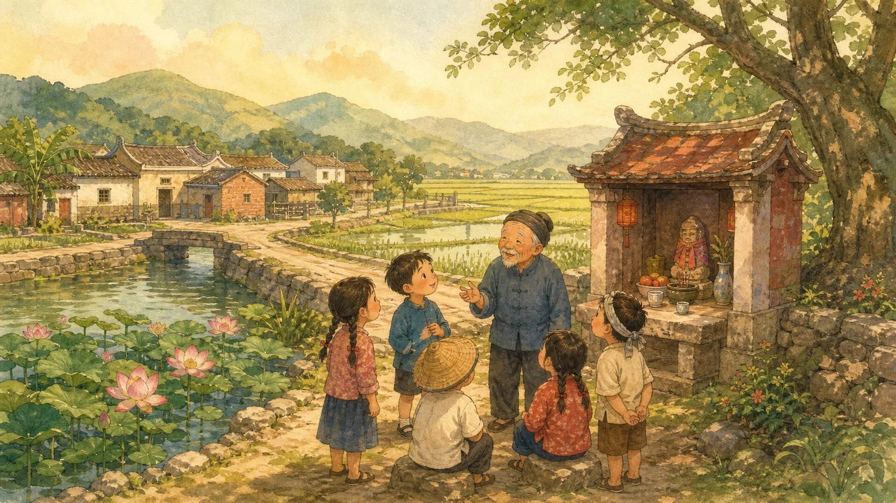
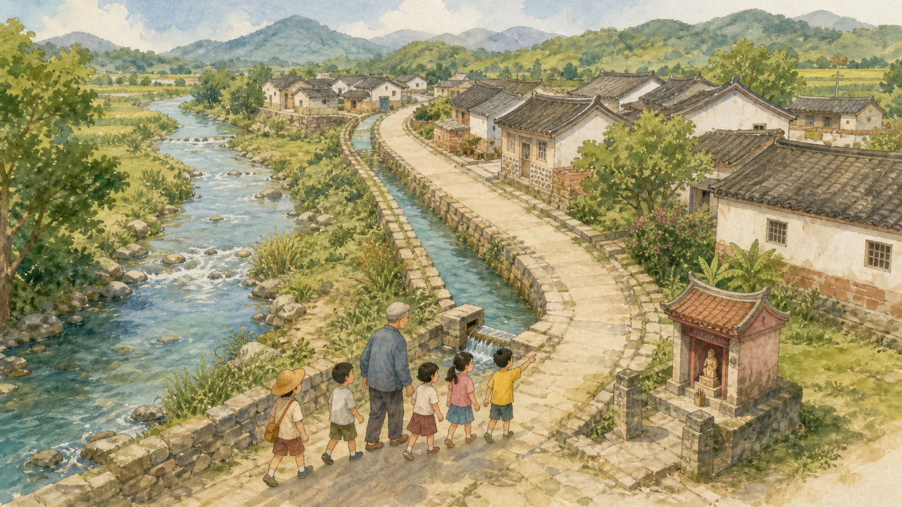
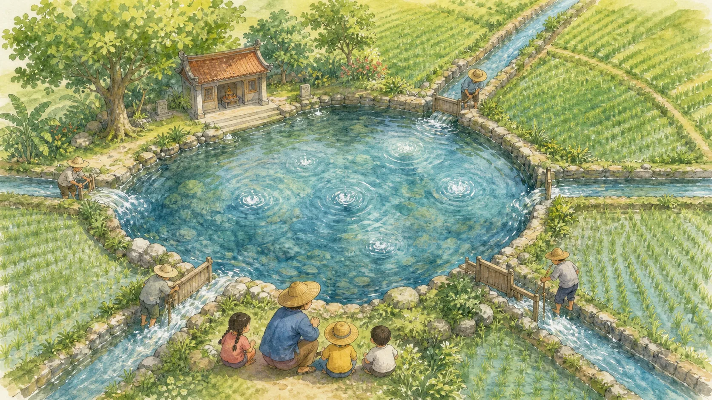
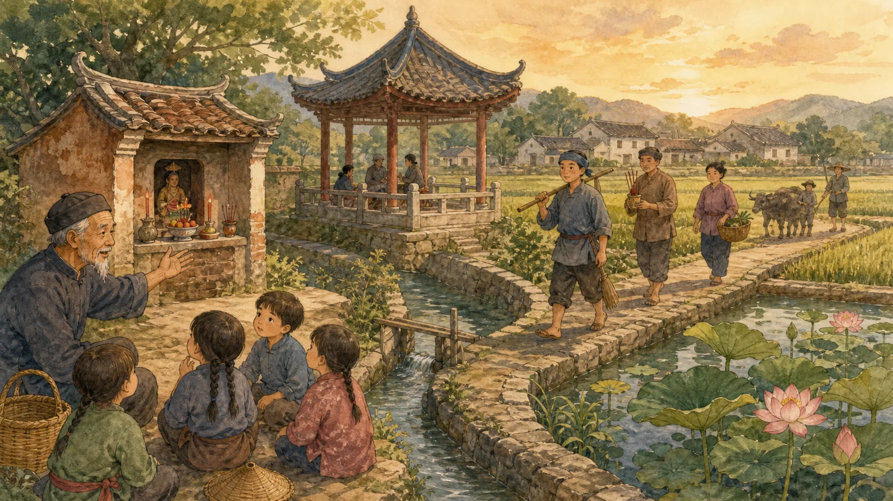
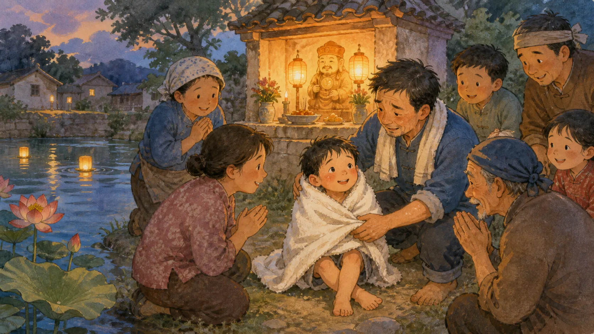
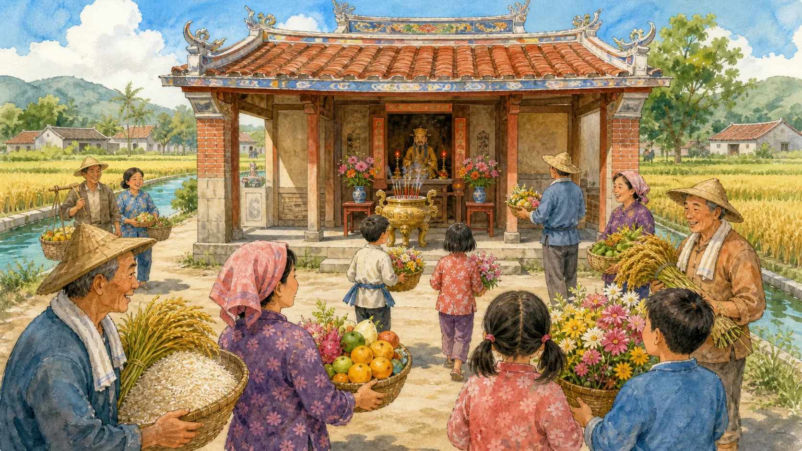
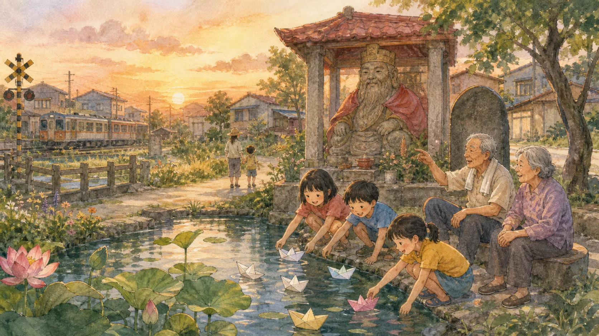

水水客庄：水口伯公。溝背庄个庄口，有一座守在水脣个伯公祠。

水口伯公，聽名就知，係在水口脣、專管水頭个伯公。溝背庄東片有龍頸溪个支流，中間又有水路穿過，聚落摎水，就在這位相堵著。

早期土地重劃以前，伯公祠脣有一口大陂塘。陂塘个水，部分係下背个湧泉來个，也接等龍頸溪支流，還連到五條圳路，灌溉附近个田園。

在客家聚落肚，伯公祠、敬字亭、水圳摎陂塘，常透係聚落邊脣个重要記號。水口伯公守在聚落摎水系交會个所在，也守等庄民對土地个敬意。

庄肚流傳一隻故事。頭擺大陂塘當深，係細人天然个尞水所在。有一擺，一個細人毋細義落到水肚，漂到伯公祠脣斯浮起來，順利分路過个人救起來。大家相信，係水口伯公在暗暗保護細人。

民國七十五年，水口伯公祠重新修建。正殿、拜亭、天公香座、金爐摎祠埕，陪等水圳摎田園。居民也相信，田作做得有好收成，係因為有水口伯公个庇佑。

後來，大陂塘因為土地重劃慢慢填起來，淨伸社區石碑脣个細荷花池。毋過水口伯公个故事，還留在庄民心肚。水流會改道，土地會改變，守護家園个心，還係會一代一代傳下去。